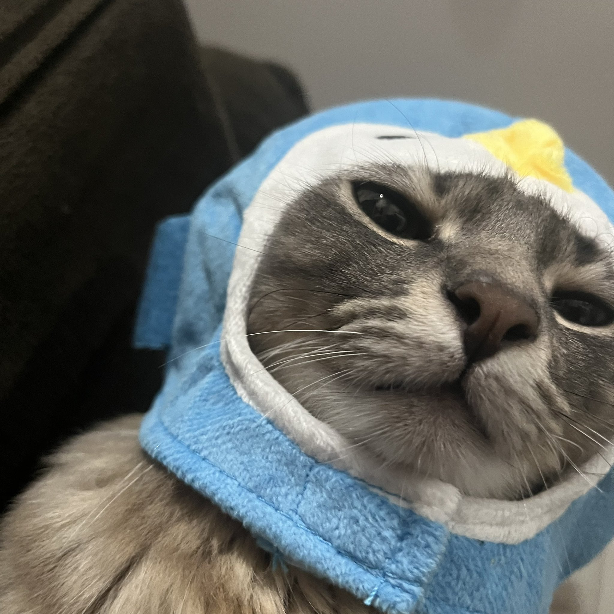
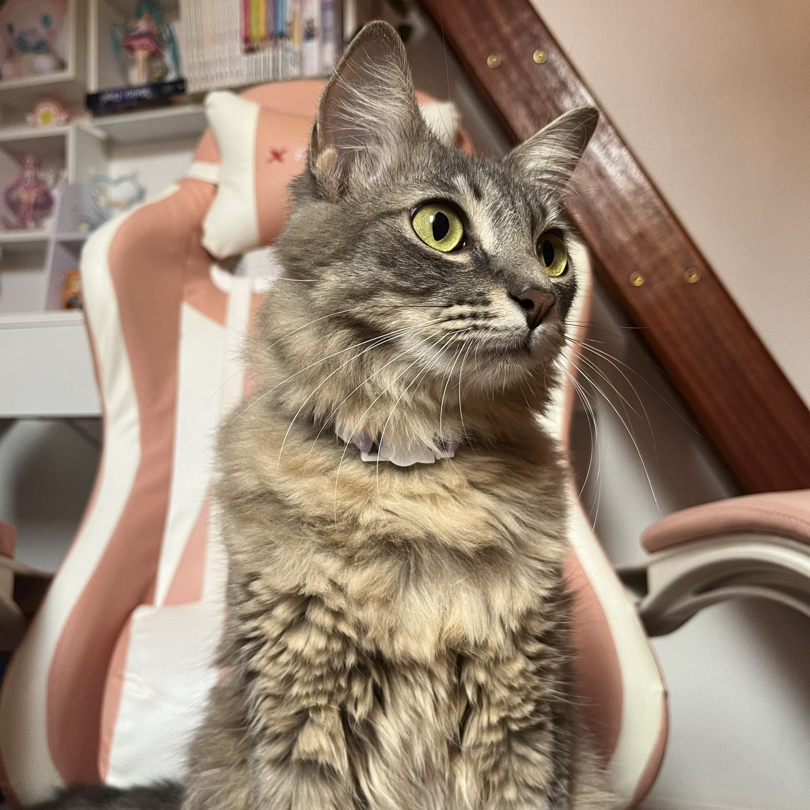
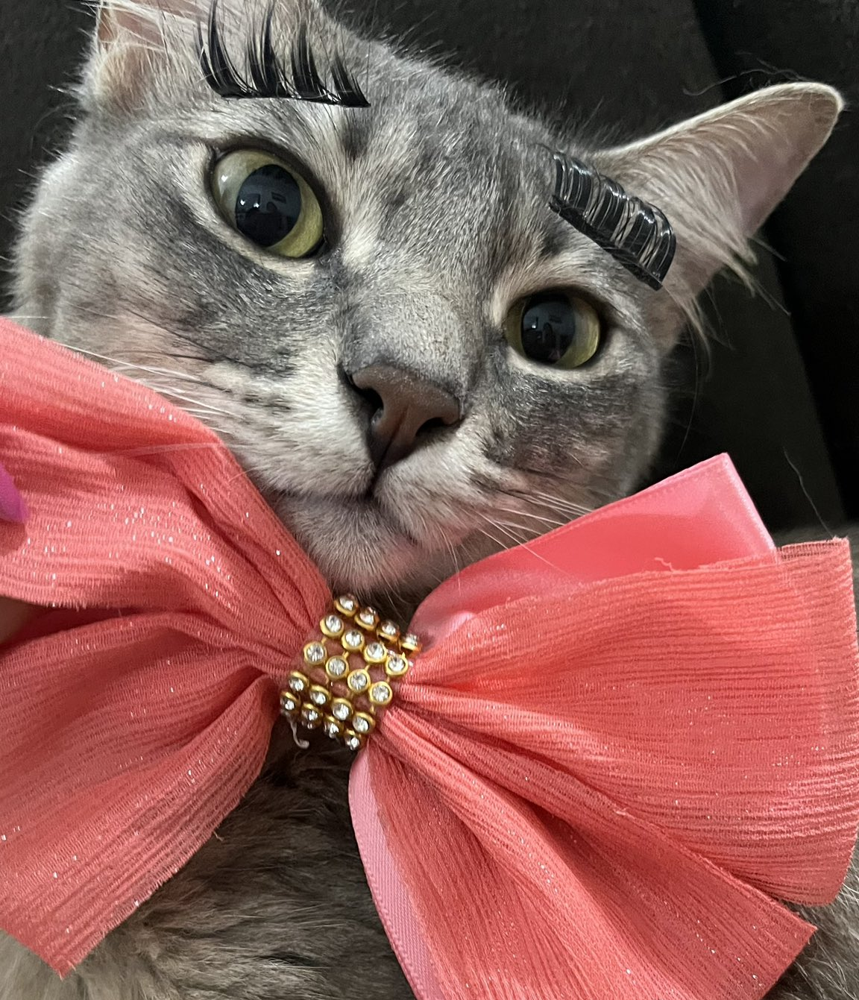
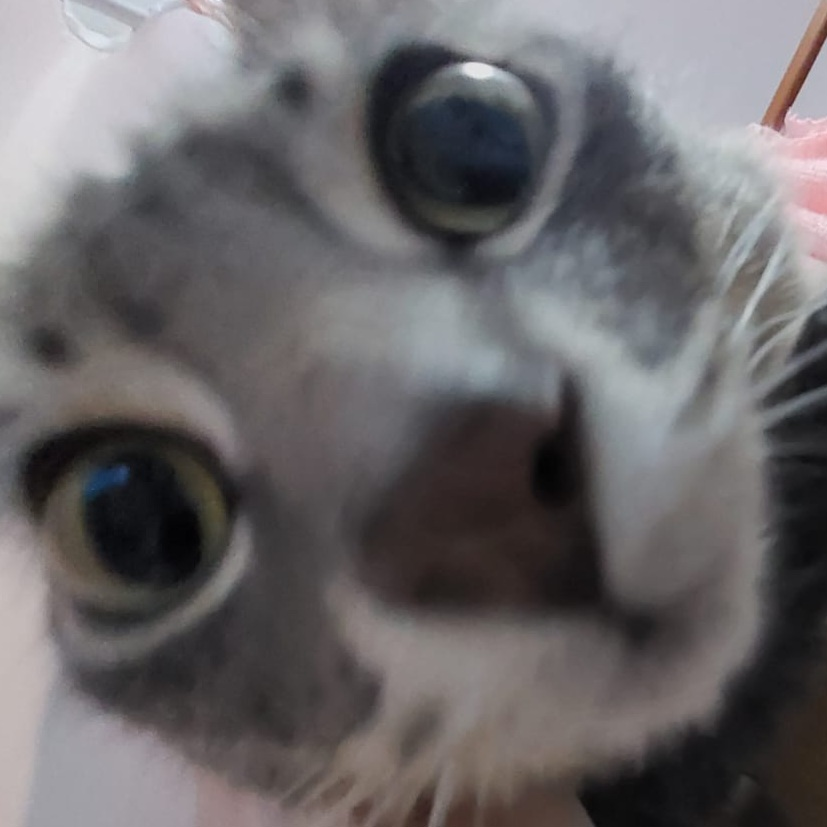

Miya
⋆.𐙚🐾 Itimimos | Mimi | Mimos | Xanim | Babymi 🩷⊹₊ ⋆
⋆ ˚｡ ⋆୨♡୧⋆ ˚｡ ⋆ the best kit cat of the world ⋆ ˚｡ ⋆୨♡୧⋆ ˚｡ ⋆
Miya nasceu em 8 de janeiro de 2023 e ela tem 2 anos, 10 meses e 5 dias de vida!🎉🐱✨
- 😿 Não gosta de pepino, banana nem milho. Faz carinha de nojo sempre que cheira e já se assustou com o pepino.
- 😸 Gosta de sache, é o almoço dela!
- 😼 Ama dreamies e churu, são os petiscos favoritos dela!
- 😽 Adora ficar na sacada ou janela fofocando e vendo a movimentação da rua.
- 😾 Não gosta de ficar muito tempo no colo e é MUITO medrosa...
➜ Primeiro dia em casa🐱✨

➜ Pinguim🐧

➜ Gato Gamer🎮

➜ Bem pomposa🩷

➜ Miya e ursinho🧸

➜ Estão di zoio in nois 👁️
